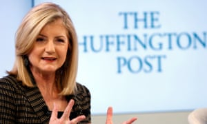
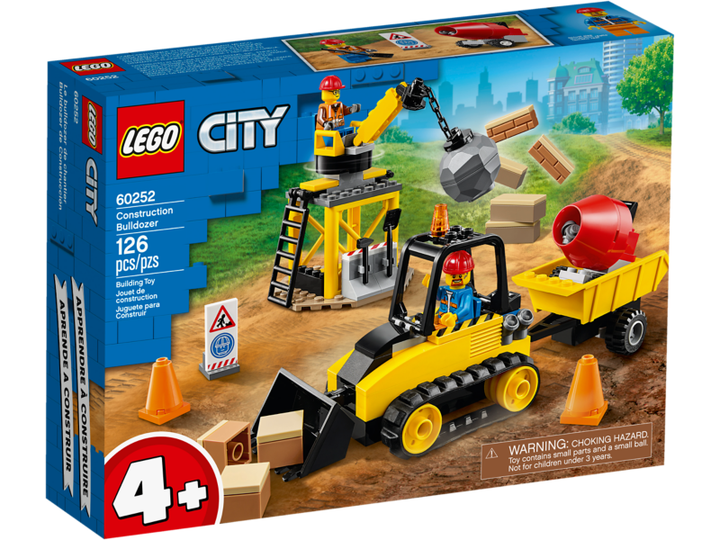

The article below said 'Psychodwarf' was Beppe Grillo's nickname for 'Mario Mastella, leader of the Popular-UDEUR centre-right party', but it's actually his nickname for Silvio Berlusconi. Mastella's first name is Clemente and Popular-UDEUR was part of Romano Prodi's centre-left coalition . And Peter Rojas, not Ryan Block, founded Engadget and co-founded Gizmodo.
The Huffington Post
The history of political blogging might usefully be divided into the periods pre- and post-Huffington. Before the millionaire socialite Arianna Huffington decided to get in on the act, bloggers operated in a spirit of underdog solidarity. They hated the mainstream media - and the feeling was mutual.Bloggers saw themselves as gadflies, pricking the arrogance of established elites from their home computers, in their pyjamas, late into the night. So when, in 2005, Huffington decided to mobilise her fortune and media connections to create, from scratch, a flagship liberal blog she was roundly derided. Who, spluttered the original bloggerati, did she think she was? But the pyjama purists were confounded. Arianna's money talked just as loudly online as off, and the Huffington Post quickly became one of the most influential and popular journals on the web. It recruited professional columnists and celebrity bloggers. It hoovered up traffic. Its launch was a landmark moment in the evolution of the web because it showed that many of the old rules still applied to the new medium: a bit of marketing savvy and deep pockets could go just as far as geek credibility, and get there faster.To borrow the gold-rush simile beloved of web pioneers, Huffington's success made the first generation of bloggers look like two-bit prospectors panning for nuggets in shallow creeks before the big mining operations moved in. In the era pre-Huffington, big media companies ignored the web, or feared it; post-Huffington they started to treat it as just another marketplace, open to exploitation. Three years on, Rupert Murdoch owns MySpace, while newbie amateur bloggers have to gather traffic crumbs from under the table of the big-time publishers.
Boing Boing
Lego reconstructions of pop videos and cakes baked in the shape of iPods are not generally considered relevant to serious political debate. But even the most earnest bloggers will often take time out of their busy schedule to pass on some titbit of mildly entertaining geek ephemera. No one has done more to promote pointless, yet strangely cool, time-wasting stuff on the net than the editors of Boing Boing (subtitle: A Directory of Wonderful Things). It launched in January 2000 and has had an immeasurable influence on the style and idiom of blogging. But hidden among the pictures of steam-powered CD players and Darth Vader tea towels there is a steely, ultra-liberal political agenda: championing the web as a global medium free of state and corporate control. Boing Boing chronicles cases where despotic regimes have silenced or imprisoned bloggers. It helped channel blogger scorn on to Yahoo and Google when they kowtowed to China's censors in order to win investment opportunities. It was instrumental in exposing the creeping erosion of civil liberties in the US under post-9/11 'Homeland Security' legislation. And it routinely ridicules attempts by the music and film industries to persecute small-time file sharers and bedroom pirates instead of getting their own web strategies in order. It does it all with gentle, irreverent charm, polluted only occasionally with gratuitous smut. Their dominance of the terrain where technology meets politics makes the Boing Boing crew geek aristocracy.
Techcrunch

Techcrunch began in 2005 as a blog about dotcom start-ups in Silicon Valley, but has quickly become one of the most influential news websites across the entire technology industry. Founder Michael Arrington had lived through the internet goldrush as a lawyer and entrepreneur before deciding that writing about new companies was more of an opportunity than starting them himself. His site is now ranked the third-most popular blog in the world by search engine Technorati, spawning a mini-empire of websites and conferences as a result. Business Week named Arrington one of the 25 most influential people on the web, and Techcrunch has even scored interviews with Barack Obama and John McCain. With a horde of hungry geeks and big money investors online, Techcrunch is the largest of a wave of technology-focused blog publishers to tap into the market - GigaOm, PaidContent and Mashable among them - but often proves more contentious than its rivals, thanks to Arrington's aggressive relationships with traditional media and his conflicts of interest as an investor himself.